fem <- read.table("fem.dat", header = TRUE)5 Getting acquainted with R
In this chapter we will use R to read a dataset and produce some descriptive statistics, produce some charts, and perform some simple statistical inference. The aim of the exercise is for you to become familiar with R and some basic R functions and objects.
The first thing we will do, after starting R, is issue a command to retrieve an example dataset:
This command illustrates some key things about the way R works.
We are instructing R to assign (using the <- operator) the output of the read.table() function to an object called fem.
The fem object will contain the data held in the file fem.dat as an R data.frame object:
class(fem)[1] "data.frame"You can inspect the contents of the fem data.frame (or any other R object) just by typing its name:
fem ID AGE IQ ANX DEP SLP SEX LIFE WT
1 1 39 94 2 2 2 1 1 2.23
2 2 41 89 2 2 2 1 1 1.00
3 3 42 83 3 3 2 1 1 1.82
4 4 30 99 2 2 2 1 1 -1.18
5 5 35 94 2 1 1 1 2 -0.14
6 6 44 90 NA 1 2 2 2 0.41
Note that the fem object is built from other objects. These are the named vectors (columns) in the dataset:
names(fem)[1] "ID" "AGE" "IQ" "ANX" "DEP" "SLP" "SEX" "LIFE" "WT"
The [1] displayed before the column names refers to the numbered position of the first name in the output. These positions are known as indexes and can be used to refer to individual items. For example:
names(fem)[1][1] "ID"
names(fem)[8][1] "LIFE"
names(fem)[2:4][1] "AGE" "IQ" "ANX"The data consist of 118 records:
nrow(fem)[1] 118
each with nine variables:
ncol(fem)[1] 9
for female psychiatric patients.
The columns in the dataset are:
| ID | Patient ID |
|---|---|
| AGE | Age in years |
| IQ | IQ score |
| ANX | Anxiety (1=none, 2=mild, 3=moderate, 4=severe) |
| DEP | Depression (1=none, 2=mild, 3=moderate or severe) |
| SLP | Sleeping normally (1=yes, 2=no) |
| SEX | Lost interest in sex (1=yes, 2=no) |
| LIFE | Considered suicide (1=yes, 2=no) |
| WT | Weight change (kg) in previous 6 months |
The first ten records of the fem data.frame are:
ID AGE IQ ANX DEP SLP SEX LIFE WT
1 1 39 94 2 2 2 1 1 2.23
2 2 41 89 2 2 2 1 1 1.00
3 3 42 83 3 3 2 1 1 1.82
4 4 30 99 2 2 2 1 1 -1.18
5 5 35 94 2 1 1 1 2 -0.14
6 6 44 90 NA 1 2 2 2 0.41
7 7 31 94 2 2 NA 1 1 -0.68
8 8 39 87 3 2 2 1 2 1.59
9 9 35 -99 3 2 2 1 1 -0.55
10 10 33 92 2 2 2 1 1 0.36
You may check this by asking R to display all columns of the first ten records in the fem data.frame:
fem[1:10, ] ID AGE IQ ANX DEP SLP SEX LIFE WT
1 1 39 94 2 2 2 1 1 2.23
2 2 41 89 2 2 2 1 1 1.00
3 3 42 83 3 3 2 1 1 1.82
4 4 30 99 2 2 2 1 1 -1.18
5 5 35 94 2 1 1 1 2 -0.14
6 6 44 90 NA 1 2 2 2 0.41
7 7 31 94 2 2 NA 1 1 -0.68
8 8 39 87 3 2 2 1 2 1.59
9 9 35 -99 3 2 2 1 1 -0.55
10 10 33 92 2 2 2 1 1 0.36The space after the comma is optional. You can think of it as a placeholder for where you would specify the indexes for columns you wanted to display. For example:
fem[1:10,2:4]
displays the first ten rows and the second, third and fourth columns of the fem data.frame:
AGE IQ ANX
1 39 94 2
2 41 89 2
3 42 83 3
4 30 99 2
5 35 94 2
6 44 90 NA
7 31 94 2
8 39 87 3
9 35 -99 3
10 33 92 2
NA is a special value meaning not available or missing.
You can access the contents of a single column by name:
fem$IQ [1] 94 89 83 99 94 90 94 87 -99 92 92 94 91 86 90 -99 91 82
[19] 86 88 97 96 95 87 103 -99 91 87 91 89 92 84 94 92 96 96
[37] 86 92 102 82 92 90 92 88 98 93 90 91 -99 92 92 91 91 86
[55] 95 91 96 100 99 89 89 98 98 103 91 91 94 91 85 92 96 90
[73] 87 95 95 87 95 88 94 -99 -99 87 92 86 93 92 106 93 95 95
[91] 92 98 92 88 85 92 84 92 91 86 92 89 -99 96 97 92 92 98
[109] 91 91 89 94 90 96 87 86 89 -99
fem$IQ[1:10] [1] 94 89 83 99 94 90 94 87 -99 92The $ sign is used to separate the name of the data.frame and the name of the column of interest. Note that R is case-sensitive so that IQ and iq are not the same.
You can also access rows, columns, and individual cells by specifying row and column positions. For example, the IQ column is the third column in the fem data.frame:
fem[ ,3] [1] 94 89 83 99 94 90 94 87 -99 92 92 94 91 86 90 -99 91 82
[19] 86 88 97 96 95 87 103 -99 91 87 91 89 92 84 94 92 96 96
[37] 86 92 102 82 92 90 92 88 98 93 90 91 -99 92 92 91 91 86
[55] 95 91 96 100 99 89 89 98 98 103 91 91 94 91 85 92 96 90
[73] 87 95 95 87 95 88 94 -99 -99 87 92 86 93 92 106 93 95 95
[91] 92 98 92 88 85 92 84 92 91 86 92 89 -99 96 97 92 92 98
[109] 91 91 89 94 90 96 87 86 89 -99
fem[9, ] ID AGE IQ ANX DEP SLP SEX LIFE WT
9 9 35 -99 3 2 2 1 1 -0.55
fem[9,3][1] -99
There are missing values in the IQ column which are all coded as -99. Before proceeding we must set these to the special NA value:
fem$IQ[fem$IQ == -99] <- NA
The term inside the square brackets is also an index. This type of index is used to refer to subsets of data held in an object that meet a particular condition. In this case we are instructing R to set the contents of the IQ variable to NA if the contents of the IQ variable is -99.
Check that this has worked:
fem$IQ [1] 94 89 83 99 94 90 94 87 NA 92 92 94 91 86 90 NA 91 82
[19] 86 88 97 96 95 87 103 NA 91 87 91 89 92 84 94 92 96 96
[37] 86 92 102 82 92 90 92 88 98 93 90 91 NA 92 92 91 91 86
[55] 95 91 96 100 99 89 89 98 98 103 91 91 94 91 85 92 96 90
[73] 87 95 95 87 95 88 94 NA NA 87 92 86 93 92 106 93 95 95
[91] 92 98 92 88 85 92 84 92 91 86 92 89 NA 96 97 92 92 98
[109] 91 91 89 94 90 96 87 86 89 NA
We can now compare the groups who have and have not considered suicide. For example:
by(fem$IQ, fem$LIFE, summary)
Look at the help for the by() function:
help(by)
Note that you may use ?by as a shortcut for help(by).
The by() function applies another function (in this case the summary() function) to a column in a data.frame (in this case fem$IQ) split by the value of another variable (in this case fem$LIFE).
It can be tedious to always have to specify a data.frame each time we want to use a particular variable. We can fix this problem by ‘attaching’ the data.frame:
attach(fem)
We can now refer to the columns in the fem data.frame without having to specify the name of the data.frame. This time we will produce summary statistics for WT by LIFE:
by(WT, LIFE, summary)LIFE: 1
Min. 1st Qu. Median Mean 3rd Qu. Max. NA's
-2.2300 -0.2700 1.0000 0.7867 1.7300 3.7700 4
------------------------------------------------------------
LIFE: 2
Min. 1st Qu. Median Mean 3rd Qu. Max. NA's
-1.6800 -0.4500 0.6400 0.6404 1.5000 2.9500 7
We can view the same data as a box and whisker plot:
boxplot(WT ~ LIFE)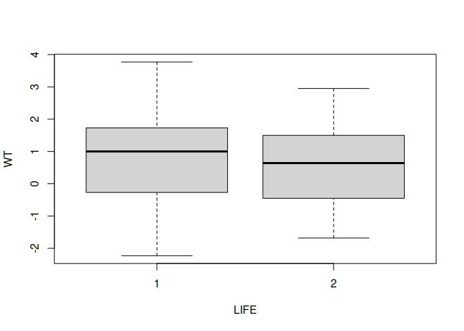
We can add axis labels and a title to the graph:
boxplot(
WT ~ LIFE,
xlab = "Life",
ylab = "Weight",
main = "Weight BY Life"
)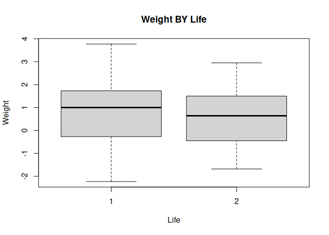
A more descriptive title might be “Weight Change BY Considered Suicide”.
The groups do not seem to differ much in their medians and the distributions appear to be reasonably symmetrical about their medians with a similar spread of values.
We can look at the distribution as histograms:
hist(WT[LIFE == 1])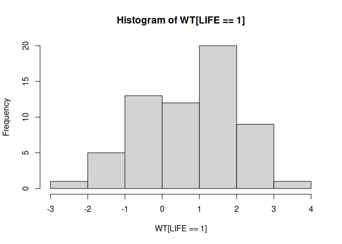
hist(WT[LIFE == 2])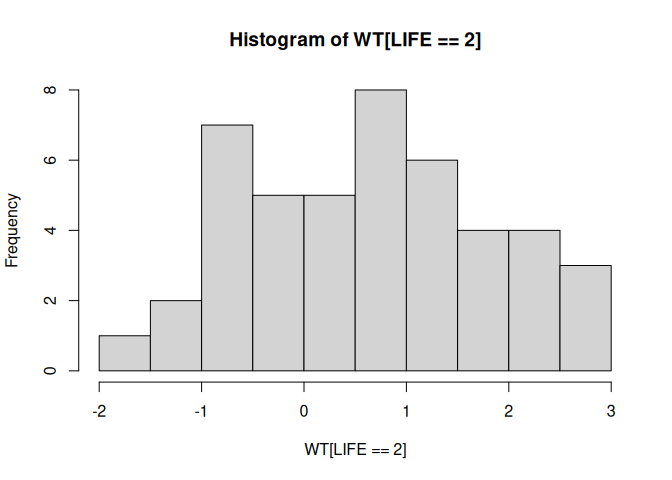
and check the assumption of normality using quantile-quantile plots:
qqnorm(WT[LIFE == 1])
qqline(WT[LIFE == 1])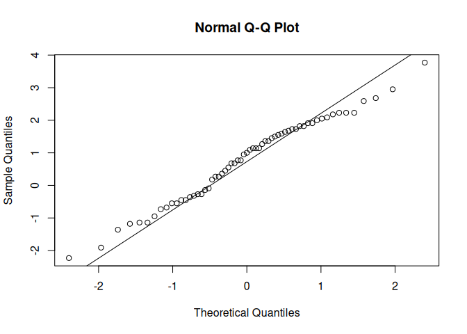
qqnorm(WT[LIFE == 2])
qqline(WT[LIFE == 2])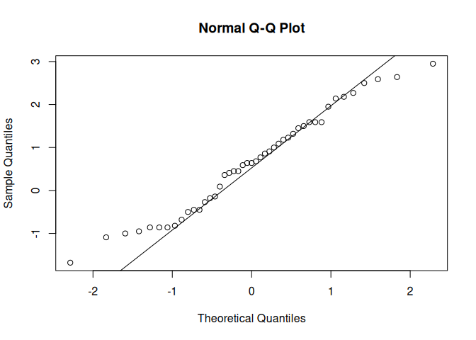
or by using a formal test:
shapiro.test(WT[LIFE == 1])
Shapiro-Wilk normality test
data: WT[LIFE == 1]
W = 0.98038, p-value = 0.4336
shapiro.test(WT[LIFE == 2])
Shapiro-Wilk normality test
data: WT[LIFE == 2]
W = 0.97155, p-value = 0.3292
Remember that we can use the by() function to apply a function to a data.frame, including statistical functions such as shapiro.test():
by(WT, LIFE, shapiro.test)LIFE: 1
Shapiro-Wilk normality test
data: dd[x, ]
W = 0.98038, p-value = 0.4336
------------------------------------------------------------
LIFE: 2
Shapiro-Wilk normality test
data: dd[x, ]
W = 0.97155, p-value = 0.3292We can also test whether the variances differ significantly using Bartlett’s test for the homogeneity of variances:
bartlett.test(WT, LIFE)
Bartlett test of homogeneity of variances
data: WT and LIFE
Bartlett's K-squared = 0.32408, df = 1, p-value = 0.5692
There is no significant difference between the two variances.
Many functions in R have a formula interface that may be used to specify multiple variables and the relations between multiple variables. We could have used the formula interface with the bartlett.test() function:
bartlett.test(WT ~ LIFE)
Bartlett test of homogeneity of variances
data: WT by LIFE
Bartlett's K-squared = 0.32408, df = 1, p-value = 0.5692
Having checked the normality and homogeneity of variance assumptions we can proceed to carry out a t-test:
t.test(WT ~ LIFE, var.equal = TRUE)
Two Sample t-test
data: WT by LIFE
t = 0.59869, df = 104, p-value = 0.5507
alternative hypothesis: true difference in means between group 1 and group 2 is not equal to 0
95 percent confidence interval:
-0.3382365 0.6307902
sample estimates:
mean in group 1 mean in group 2
0.7867213 0.6404444
There is no evidence that the two groups differ in weight change in the previous six months.
We could still have performed a t-test if the variances were not homogenous by setting the var.equal parameter of the t.test() function to FALSE:
t.test(WT ~ LIFE, var.equal = FALSE)
Welch Two Sample t-test
data: WT by LIFE
t = 0.60608, df = 98.866, p-value = 0.5459
alternative hypothesis: true difference in means between group 1 and group 2 is not equal to 0
95 percent confidence interval:
-0.3326225 0.6251763
sample estimates:
mean in group 1 mean in group 2
0.7867213 0.6404444
or performed a non-parametric test:
wilcox.test(WT ~ LIFE)
Wilcoxon rank sum test with continuity correction
data: WT by LIFE
W = 1488, p-value = 0.4622
alternative hypothesis: true location shift is not equal to 0An alternative, and more general, non-parametric test is:
kruskal.test(WT ~ LIFE)
Kruskal-Wallis rank sum test
data: WT by LIFE
Kruskal-Wallis chi-squared = 0.54521, df = 1, p-value = 0.4603
We can use the table() function to examine the differences in depression between the two groups:
table(DEP, LIFE) LIFE
DEP 1 2
1 0 26
2 42 24
3 16 1
The two distributions look very different from each other. We can test this using a chi-square test on the table:
chisq.test(table(DEP, LIFE))
Pearson's Chi-squared test
data: table(DEP, LIFE)
X-squared = 43.876, df = 2, p-value = 2.968e-10Note that we passed the output of the table() function directly to the chisq.test() function. We could have saved the table as an object first and then passed the object to the chisq.test() function:
tab <- table(DEP, LIFE)
chisq.test(tab)
Pearson's Chi-squared test
data: tab
X-squared = 43.876, df = 2, p-value = 2.968e-10
The tab object contains the output of the table() function:
class(tab)[1] "table"tab LIFE
DEP 1 2
1 0 26
2 42 24
3 16 1
We can pass this table object to another function. For example:
fisher.test(tab)
Fisher's Exact Test for Count Data
data: tab
p-value = 1.316e-12
alternative hypothesis: two.sided
When we are finished with the tab object we can delete it using the rm() function:
rm(tab)
You can see a list of available objects using the ls() function:
ls()[1] "fem" "pandoc_dir" "quarto_bin_path"
This should just show the fem object.
We can examine the association between loss of interest in sex and considering suicide in the same way:
tab <- table(SEX, LIFE)
tab LIFE
SEX 1 2
1 58 38
2 5 12fisher.test(tab)
Fisher's Exact Test for Count Data
data: tab
p-value = 0.03175
alternative hypothesis: true odds ratio is not equal to 1
95 percent confidence interval:
1.080298 14.214482
sample estimates:
odds ratio
3.620646 Note that with a two-by-two table the fisher.test() function produces an estimate of, and confidence intervals for, the odds ratio. Again, we will delete the tab object:
rm(tab)
We could have performed the Fisher exact test without creating the tab object by passing the output of the table() function directly to the fisher.test() function:
fisher.test(table(SEX, LIFE))
Fisher's Exact Test for Count Data
data: table(SEX, LIFE)
p-value = 0.03175
alternative hypothesis: true odds ratio is not equal to 1
95 percent confidence interval:
1.080298 14.214482
sample estimates:
odds ratio
3.620646
Choose whichever method you find easiest but remember that it is easy to save the results of any function for later use.
We can explore the correlation between two variables using the cor() function:
cor(IQ, WT, use = "pairwise.complete.obs")[1] -0.2917158or by using a scatter plot:
plot(IQ, WT)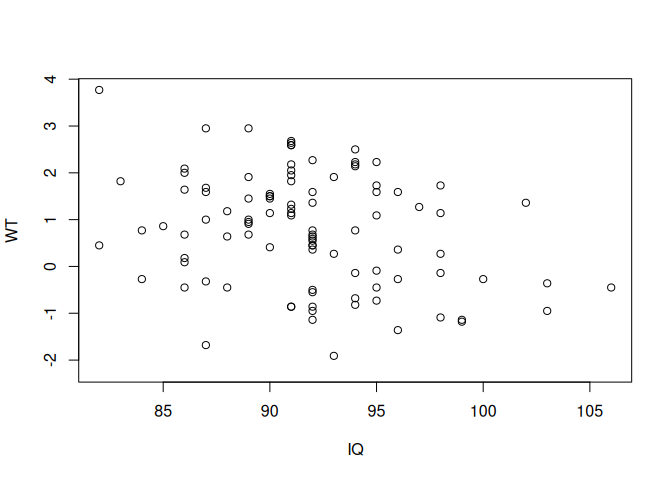
and by a formal test:
cor.test(IQ, WT)
Pearson's product-moment correlation
data: IQ and WT
t = -3.0192, df = 98, p-value = 0.003231
alternative hypothesis: true correlation is not equal to 0
95 percent confidence interval:
-0.4616804 -0.1010899
sample estimates:
cor
-0.2917158 With some functions you can pass an entire data.frame rather than a list of variables:
cor(fem, use = "pairwise.complete.obs")
pairs(fem) ID AGE IQ ANX DEP
ID 1.00000000 0.03069077 0.0370598672 -0.02941825 -0.0554147209
AGE 0.03069077 1.00000000 -0.4345435680 0.06734300 -0.0387049246
IQ 0.03705987 -0.43454357 1.0000000000 -0.02323787 -0.0001307404
ANX -0.02941825 0.06734300 -0.0232378691 1.00000000 0.5437946347
DEP -0.05541472 -0.03870492 -0.0001307404 0.54379463 1.0000000000
SLP -0.07268743 0.02606547 0.0812993104 0.22317875 0.5248724551
SEX 0.08999634 0.10609216 -0.0536558660 -0.21062493 -0.3058422258
LIFE -0.05604349 -0.10300193 -0.0915396469 -0.34211268 -0.6139017253
WT 0.02640131 0.41574411 -0.2917157832 0.11817532 0.0233742465
SLP SEX LIFE WT
ID -0.072687434 0.08999634 -0.05604349 0.026401310
AGE 0.026065468 0.10609216 -0.10300193 0.415744109
IQ 0.081299310 -0.05365587 -0.09153965 -0.291715783
ANX 0.223178752 -0.21062493 -0.34211268 0.118175321
DEP 0.524872455 -0.30584223 -0.61390173 0.023374247
SLP 1.000000000 -0.29053971 -0.35186578 -0.009259774
SEX -0.290539709 1.00000000 0.22316967 -0.027826514
LIFE -0.351865775 0.22316967 1.00000000 -0.058605326
WT -0.009259774 -0.02782651 -0.05860533 1.000000000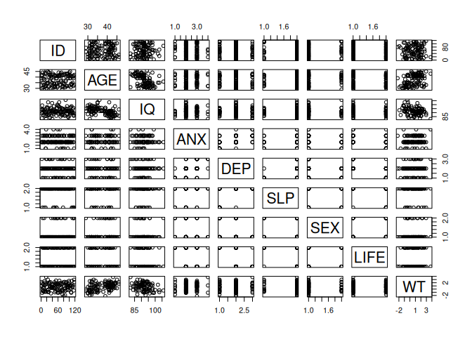
The output can be a little confusing particularly if it includes categorical or record identifying variables. To avoid this we can create a new object that contains only the columns we are interested in using the column binding cbind() function:
newfem <- cbind(AGE, IQ, WT)
cor(newfem, use = "pairwise.complete.obs")
pairs(newfem) AGE IQ WT
AGE 1.0000000 -0.4345436 0.4157441
IQ -0.4345436 1.0000000 -0.2917158
WT 0.4157441 -0.2917158 1.0000000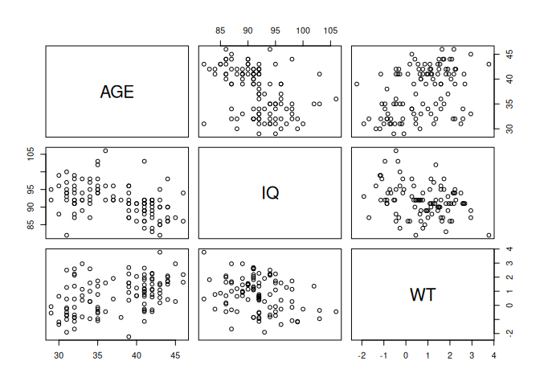
When we have finished with the newfem object we can delete it:
rm(newfem)
There was no real need to create the newfem object as we could have fed the output of the cbind() function directly to the cor() or pairs() function:
cor(cbind(AGE, IQ, WT), use = "pairwise.complete.obs")
pairs(cbind(AGE, IQ, WT)) AGE IQ WT
AGE 1.0000000 -0.4345436 0.4157441
IQ -0.4345436 1.0000000 -0.2917158
WT 0.4157441 -0.2917158 1.0000000
It is, however, easier to work with the newfem object rather than having to retype the cbind() function. This is particularly true if you wanted to continue with an analysis of just the three variables.
The relationship between AGE and WT can be plotted using the plot() function:
plot(AGE, WT)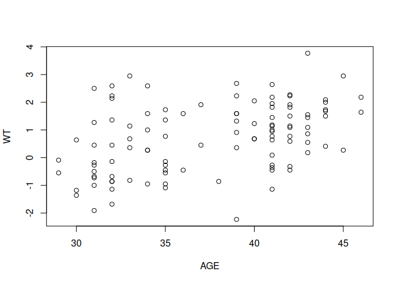
And tested using the cor() and cor.test() functions:
cor(AGE, WT, use = "pairwise.complete.obs")[1] 0.4157441cor.test(AGE, WT)
Pearson's product-moment correlation
data: AGE and WT
t = 4.6841, df = 105, p-value = 8.457e-06
alternative hypothesis: true correlation is not equal to 0
95 percent confidence interval:
0.2452434 0.5612979
sample estimates:
cor
0.4157441 Or by using the linear modelling lm() function:
summary(lm(WT ~ AGE))
Call:
lm(formula = WT ~ AGE)
Residuals:
Min 1Q Median 3Q Max
-3.10678 -0.85922 -0.05453 0.71434 2.70874
Coefficients:
Estimate Std. Error t value Pr(>|t|)
(Intercept) -3.25405 0.85547 -3.804 0.00024 ***
AGE 0.10592 0.02261 4.684 8.46e-06 ***
---
Signif. codes: 0 '***' 0.001 '**' 0.01 '*' 0.05 '.' 0.1 ' ' 1
Residual standard error: 1.128 on 105 degrees of freedom
(11 observations deleted due to missingness)
Multiple R-squared: 0.1728, Adjusted R-squared: 0.165
F-statistic: 21.94 on 1 and 105 DF, p-value: 8.457e-06
We use the summary() function here to extract summary information from the output of the lm() function.
It is often more useful to use lm() to create an object:
fem.lm <- lm(WT ~ AGE)And use the output in other functions:
summary(fem.lm)
Call:
lm(formula = WT ~ AGE)
Residuals:
Min 1Q Median 3Q Max
-3.10678 -0.85922 -0.05453 0.71434 2.70874
Coefficients:
Estimate Std. Error t value Pr(>|t|)
(Intercept) -3.25405 0.85547 -3.804 0.00024 ***
AGE 0.10592 0.02261 4.684 8.46e-06 ***
---
Signif. codes: 0 '***' 0.001 '**' 0.01 '*' 0.05 '.' 0.1 ' ' 1
Residual standard error: 1.128 on 105 degrees of freedom
(11 observations deleted due to missingness)
Multiple R-squared: 0.1728, Adjusted R-squared: 0.165
F-statistic: 21.94 on 1 and 105 DF, p-value: 8.457e-06plot(AGE, WT)
abline(fem.lm)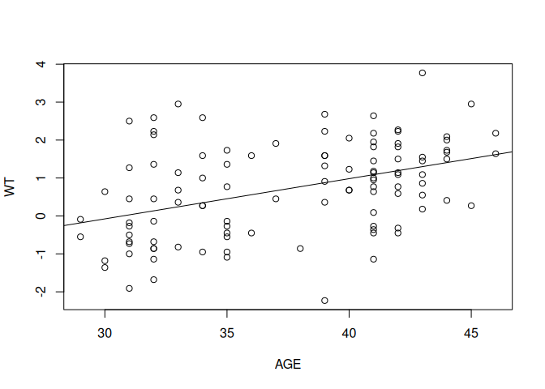
In this case we are passing the intercept and slope information held in the fem.lm object to the abline() function which draws a regression line. The abline() function adds to an existing plot. This means that you need to keep the scatter plot of AGE and WT open before issuing the abline() function call.
A useful function to apply to the fem.lm object is plot() which produces diagnostic plots of the linear model:
plot(fem.lm)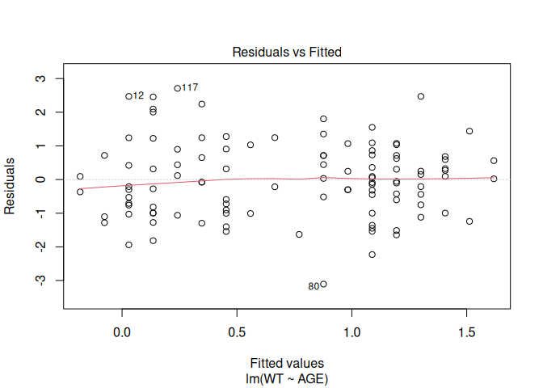
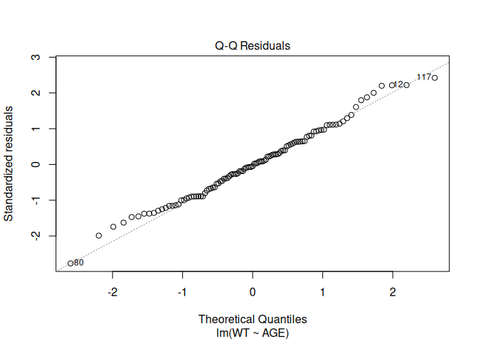
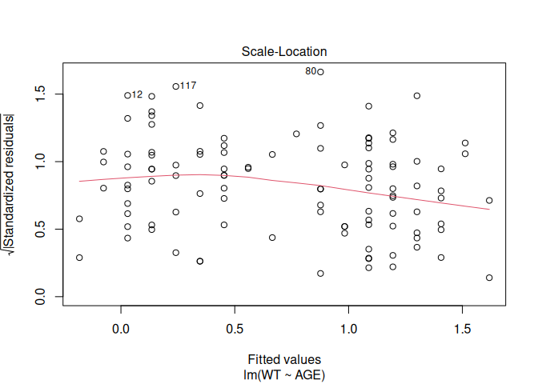
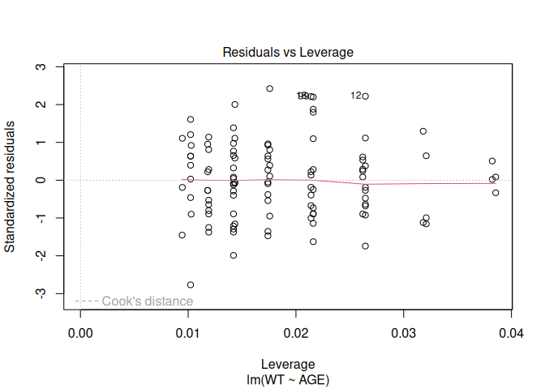
Objects created by the lm() function (or any of the modelling functions) can use up a lot of memory so we should remove them when we no longer need them:
rm(fem.lm)
It might be interesting to see whether a similar relationship exists between AGE and WT for those who have and have not considered suicide. This can be done using the coplot() function:
coplot(WT ~ AGE | as.factor(LIFE))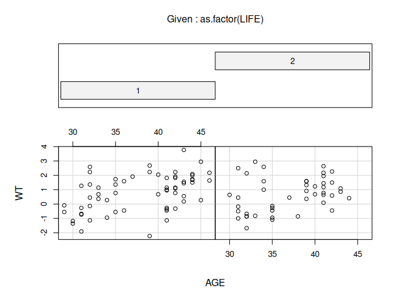
Missing rows: 21, 22, 31, 43, 44, 45, 69, 81, 101, 104, 114, 115 The two plots looks similar. We could also use coplot() to investigate the relationship between AGE and WT for categories of both LIFE and SEX:
coplot(WT ~ AGE | as.factor(LIFE) * as.factor(SEX))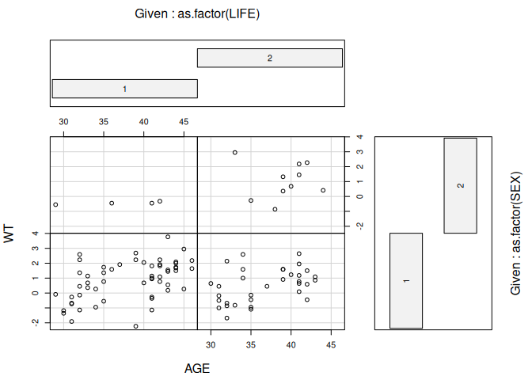
Missing rows: 12, 17, 21, 22, 31, 43, 44, 45, 66, 69, 81, 101, 104, 105, 114, 115
although the numbers are too small for this to be useful here.
We used the as.factor() function with the coplot() function to ensure that R was aware that the LIFE and SEX columns hold categorical data.
We can check the way variables are stored using the data.class() function:
data.class(fem$SEX)[1] "numeric"The parameters of most R functions have default values. These are usually the most used and most useful parameter values for each function. The cor.test() function, for example, calculates Pearson’s product moment correlation coefficient by default. This is an appropriate measure for data from a bivariate normal distribution. The DEP and ANX variables contain ordered data. An appropriate measure of correlation between DEP and ANX is Kendall’s tau. This can be obtained using:
cor.test(DEP, ANX, method = "kendall")
Kendall's rank correlation tau
data: DEP and ANX
z = 5.5606, p-value = 2.689e-08
alternative hypothesis: true tau is not equal to 0
sample estimates:
tau
0.4950723
5.1 Summary
Ris a functional system. Everything is done by calling functions.Rprovides a large set of functions for descriptive statistics, charting, and statistical inference.- Functions can be chained together so that the output of one function is the input of another function.
Ris an object oriented system. We can use functions to create objects that can then be manipulated or passed to other functions for subsequent analysis.